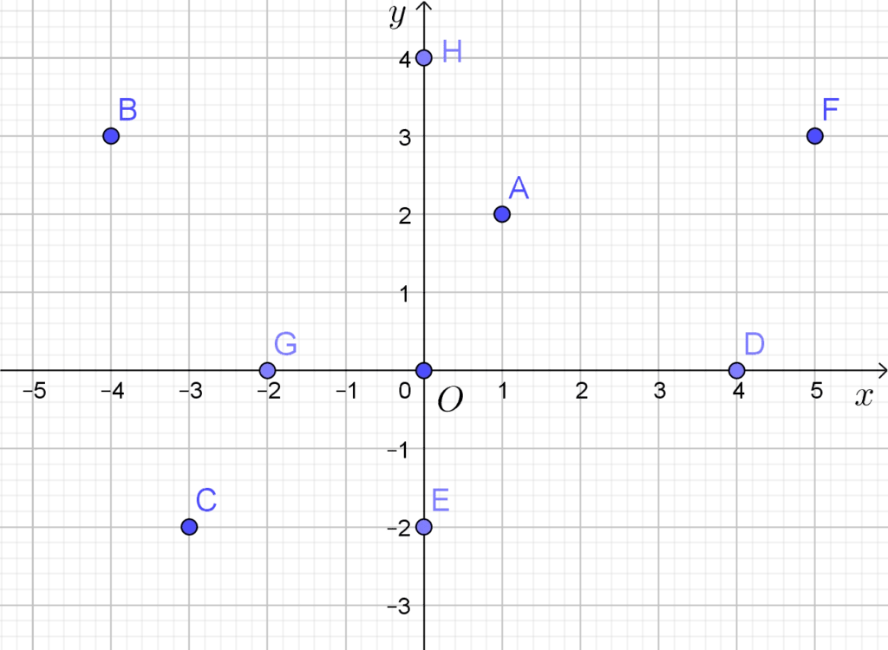
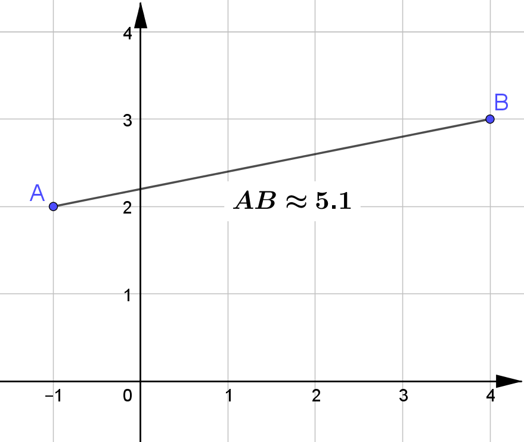

Repérage dans le plan
Coordonnées d’un point dans un repère
Repère et coordonnées
Definition
Définir un repère, c’est donner trois points $O$, $I$ et $J$ non alignés dans un ordre précis.
On note $\OIJ$ ce repère.
- Le point $O$ est appelé l’origine du repère.
- La droite $(OI)$ est l’axe des abscisses.
- La droite $(OJ)$ est l’axe des ordonnées.
Rem
Dans le repère $\OIJ$, les coordonnées des points $O$,$I$ et $J$ sont : $$O(0;0)\qquad I(1;0)\qquad J(0;1)$$
Rem
Les coordonnées d’un point sont toujours écrites dans le même ordre :
$$(\text{abscisse};\text{ordonnée})\qquad\text{ou}\qquad\pa{x;y}$$
Exemple
- $A(1;2)$
- $B(-4;3)$
- $C(-3;-2)$
- $…$
- $F(5;3)$

Orthogonal, normé et orthonormé
Definition
Soit le repère $\OIJ$
- Si $(OI)\perp(OJ)$, on dit que le reprère est orthogonal
- Si $OI=OJ$, on dit que le reprère est normé
- orthogonal et normé = orthonormé

Coordonnées du milieu d’un segment
Propriété : coordonnées d’un milieu
Prop
Soient les points $A(x_A;y_A)$ et $B(x_B;y_B)$.
Les coordonnées du milieu $M$ du segment $[AB]$ sont données par :
$$\boxed{x_M=\cfrac{(x_A+x_B)}{2}\qquad\text{et}\qquad y_M=\cfrac{(y_A+y_B)}{2}}$$
Rem
Les coordonnées de $M$ sont la “moyenne” des coordonnées de $A$ et de $B$
Exemple
Soient $A(\cbox{lightblue}{2};\cbox{palegreen}{1})$ et $B(\cbox{lightblue}{6};\cbox{palegreen}{3})$
Les coordonnées de $M$ milieu de $[AB]$ sont :
- $x_M=\cfrac{(x_A+x_B)}{2}=\cfrac{(\cbox{lightblue}{2}+\cbox{lightblue}{6})}{2}=\cfrac{8}{2}=4$
- $y_M=\cfrac{(y_A+y_B)}{2}=\cfrac{(\cbox{palegreen}{1}+\cbox{palegreen}{3})}{2}=\cfrac{4}{2}=2$
On a donc $M(4;2)$
Exemple
Rappel : Un quadrilatère dont les diagonales se coupent en leurs milieux est un parallélogramme.
Soient $A(1;2)$, $B(3;2)$, $C(4;1)$ et $D(2;1)$.
- $K$ milieu de $[AC]$ : $\quad K\left(\cfrac{1+4}{2};\cfrac{2+1}{2}\right)\Rightarrow K\left(\cfrac{5}{2};\cfrac{3}{2}\right)$
- $L$ milieu de $[BD]$ : $\quad L\left(\cfrac{3+2}{2};\cfrac{2+1}{2}\right)\Rightarrow L\left(\cfrac{5}{2};\cfrac{3}{2}\right)$
$K$ et $L$ ont même coordonnées donc $[AC]$ et $[BD]$ se coupent en leurs milieux donc $ABCD$ est un parallélogramme.

Distance entre deux points
Propriété : distance entre deux points
Prop
Soient les points $A(x_A; y_A)$ et $B(x_B; y_B)$.
La distance entre $A$ et $B$ :
$$\boxed{AB=\sqrt{(x_A-x_B)^2 +(y_A-y_B)^2 }}$$
Exemple
Soient $A(\cbox{lightblue}{-1};\cbox{palegreen}{2})$ et $B(\cbox{lightblue}{4};\cbox{palegreen}{3})$. On a :
$$ \begin{aligned} AB & =\sqrt{(x_A-x_B)^2 +(y_A-y_B)^2 } \\ ~ & =\sqrt{(\cbox{lightblue}{(-1)}-\cbox{lightblue}{4})^2 +(\cbox{palegreen}{2}-\cbox{palegreen}{3})^2 } \\ ~ & =\sqrt{(-5)^2 +(-1)^2 } \\ ~ & =\sqrt{26}\approx 5.1 \\ \end{aligned} $$

Demo
Soient les points $A(x_A; y_A)$ et $B(x_B; y_B)$.
Considérons le point $C$ tel que : $\quad C(x_B;y_A)$

On a :
- $AC=(x_B-x_A)~\text{et}~BC=(y_B-y_A)$
D’après le théorème de Pythagore :
- $AB^2 =AC^2 +BC^2 $
Donc
$$ \begin{aligned} ~ & ~AB^2 =(x_B-x_A)^2 +(y_B-y_A)^2 \\ \iff~ & ~AB=\sqrt{(x_B-x_A)^2 +(y_B-y_A)^2 } \end{aligned} $$
Exemple
Soient $A(6;5)$, $B(2;-3)$ et $C(-4;0)$
$\begin{aligned}\tc{blue}{AB}&=\sqrt{(6-2)^2 +(5-(-3))^2 }\\~&=\sqrt{4^2 +8^2 }=\tc{blue}{\sqrt{80}}\end{aligned}$
$\begin{aligned}\tc{green}{BC}&=\sqrt{(2-(-4))^2 +((-3)-0)^2 }\\~&=\sqrt{6^2 +(-3)^2 }=\tc{green}{\sqrt{45}}\end{aligned}$
$\begin{aligned}\tc{red}{AC}&=\sqrt{(6-(-4))^2 +(5-0)^2 }\\~&=\sqrt{10^2 +5^2 }=\tc{red}{\sqrt{125}}\end{aligned}$
On a : $\quad \tc{red}{AC}^2 =\tc{blue}{AB}^2 +\tc{green}{BC}^2 $ donc $ABC$ est un triangle rectangle
Alignement de 3 points
Prop
Soient $A$, $B$ et $C$ trois points distincts du plan.
Si $AC=AB+BC$ alors $A$, $B$ et $C$ sont alignés dans cet ordre.
Exemple
Soit $ABCD$ est un carré de coté $8$ et deux points $E(0;13)$ et $F(21;0)$.
❓ $E$, $C$ et $F$ sont-ils alignés ?

$~$
On a $E(0;13)$, $F(21;0)$ et $C(8;8)$
- $\tc{blue}{EC}=\sqrt{(8-0)^2 +(8-13)^2 }= \tc{blue}{\sqrt{89}}$
- $\tc{green}{CF}=\sqrt{(21-8)^2 +(0-8)^2 }= \tc{green}{\sqrt{233}}$
- $\tc{red}{EF}=\sqrt{(21-0)^2 +(0-13)^2 }=\tc{red}{\sqrt{610}}$
$\tc{red}{EF}\neq \tc{blue}{EC}+\tc{green}{CF}$ donc $E$, $F$ et $C$ ne sont pas alignés.